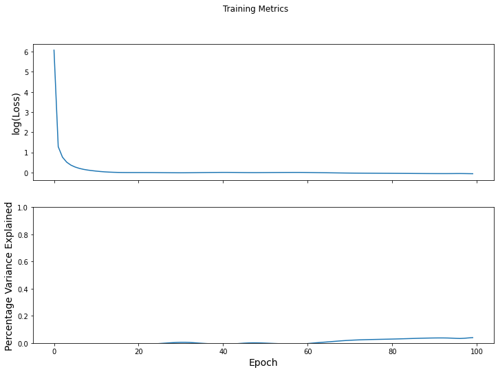
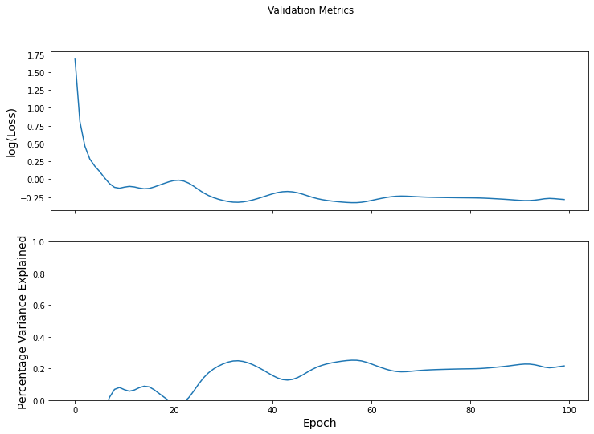

Predicting next time point shuffled across participants¶
Load data¶
# Load dataset
X, X_len, clip_y, num_subjs, num_clips = get_data()
# clip names
clip_name_to_idx = _get_clip_labels()
clip_idx_to_name = {v: k for k, v in clip_name_to_idx.items()}
clip_idx_to_name[0] = clip_idx_to_name[0][:-1] # get rid of run number in test-retest
clip_names = list(clip_idx_to_name.keys())
# # Pad each time-series with zeros to equalize lengths
# X = pad_data(X)
# Fix a clip for simulating its trajectory
clip_num = 4
X_clip = [X[i] for i in range(len(clip_y)) if clip_y[i] == clip_num]
y_clip = [clip_y[i] for i in range(len(clip_y)) if clip_y[i] == clip_num]
loading run 1/1
Create graphs from data¶
Here we use a history of length k = 5.
As a control analysis, we set the time-series of each participant as a random \(#time \times #ROI\) matrix.
# Create data
X = []
y = []
# Length of memory/history of data-sequence
k = 5
shuffled_subjs = np.random.permutation(num_subjs)
for idx_subj in range(num_subjs):
x = X_clip[idx_subj]
x_shuffled = X_clip[shuffled_subjs[idx_subj]]
for idx_tp in range(k, x.shape[0]):
if len(X) >= 8448:
x_tp = x[idx_tp - k : idx_tp, :]
y_tp = x[idx_tp, :]
else:
x_tp = x[idx_tp - k : idx_tp, :]
y_tp = x_shuffled[idx_tp, :]
X.append(x_tp)
y.append(y_tp)
y = np.array(y)
# Create graphs from data
prob_edge = 0.1
graphs_dict_list = clip_graphs(X,
prob_edge=prob_edge)
Performance evaluation¶
Model training¶
# Train, test split
num_X = len(X)
num_train = round(0.8 * num_X)
num_val = 0 * num_X
num_test = num_X - num_train - num_val
num_splits = 1
test_accuracy_results = []
for idx_split in range(num_splits):
# Shuffle data for random train-test splits
# rand_idx = np.rand_perm = np.random.permutation(num_X)
# graphs_dict_list_perm = list(map(lambda i: graphs_dict_list[i], rand_idx))
# y_perm = y[rand_idx, :]
graphs_dict_list_perm = graphs_dict_list
y_perm = y
# Create split
train_G, train_y, val_G, val_y, test_G, test_y = train_val_test_split(graphs_dict_list_perm,
y_perm,
num_train,
num_val,
num_test)
model = NLNNProcessDecode(num_nodes=train_G[0]['nodes'].shape[0],
k_layers=[16],
num_processing_steps=0)
graph_slice = lambda x, start, end : utils_tf.data_dicts_to_graphs_tuple(x[start : end])
NLNN_simulator = base_model(task_type="regression",
model=model,
loss_object=tf.keras.losses.MeanSquaredError(),
optimizer=tf.keras.optimizers.Adam(learning_rate=0.01),
eval_metric=tfa.metrics.RSquare(),
eval_metric_name="% var explained",
batch_size=128,
slice_input=graph_slice)
results = NLNN_simulator.fit(train_X=train_G,
train_Y=train_y,
val_X=test_G,
val_Y=test_y,
num_epochs=100)
Epoch 000: Train Loss: 436.135, Train % var explained: -32331.259% Val Loss: 5.431, Val % var explained: -467.990%
Epoch 001: Train Loss: 3.598, Train % var explained: -265.226% Val Loss: 2.243, Val % var explained: -134.422%
Epoch 002: Train Loss: 2.140, Train % var explained: -119.272% Val Loss: 1.593, Val % var explained: -66.362%
Epoch 003: Train Loss: 1.668, Train % var explained: -71.003% Val Loss: 1.328, Val % var explained: -38.565%
Epoch 004: Train Loss: 1.440, Train % var explained: -47.602% Val Loss: 1.203, Val % var explained: -25.459%
Epoch 005: Train Loss: 1.310, Train % var explained: -34.159% Val Loss: 1.114, Val % var explained: -16.129%
Epoch 006: Train Loss: 1.225, Train % var explained: -25.337% Val Loss: 1.018, Val % var explained: -6.211%
Epoch 007: Train Loss: 1.167, Train % var explained: -19.273% Val Loss: 0.941, Val % var explained: 1.839%
Epoch 008: Train Loss: 1.126, Train % var explained: -15.017% Val Loss: 0.893, Val % var explained: 6.762%
Epoch 009: Train Loss: 1.095, Train % var explained: -11.787% Val Loss: 0.882, Val % var explained: 7.953%
Epoch 010: Train Loss: 1.069, Train % var explained: -9.136% Val Loss: 0.895, Val % var explained: 6.584%
Epoch 011: Train Loss: 1.048, Train % var explained: -6.932% Val Loss: 0.905, Val % var explained: 5.619%
Epoch 012: Train Loss: 1.031, Train % var explained: -5.205% Val Loss: 0.898, Val % var explained: 6.359%
Epoch 013: Train Loss: 1.019, Train % var explained: -3.906% Val Loss: 0.884, Val % var explained: 7.818%
Epoch 014: Train Loss: 1.010, Train % var explained: -2.920% Val Loss: 0.875, Val % var explained: 8.778%
Epoch 015: Train Loss: 1.003, Train % var explained: -2.193% Val Loss: 0.879, Val % var explained: 8.362%
Epoch 016: Train Loss: 1.000, Train % var explained: -1.709% Val Loss: 0.897, Val % var explained: 6.570%
Epoch 017: Train Loss: 0.998, Train % var explained: -1.435% Val Loss: 0.920, Val % var explained: 4.245%
Epoch 018: Train Loss: 0.997, Train % var explained: -1.303% Val Loss: 0.942, Val % var explained: 1.914%
Epoch 019: Train Loss: 0.997, Train % var explained: -1.225% Val Loss: 0.965, Val % var explained: -0.358%
Epoch 020: Train Loss: 0.997, Train % var explained: -1.144% Val Loss: 0.982, Val % var explained: -2.100%
Epoch 021: Train Loss: 0.997, Train % var explained: -1.056% Val Loss: 0.987, Val % var explained: -2.592%
Epoch 022: Train Loss: 0.997, Train % var explained: -0.956% Val Loss: 0.975, Val % var explained: -1.393%
Epoch 023: Train Loss: 0.996, Train % var explained: -0.815% Val Loss: 0.947, Val % var explained: 1.492%
Epoch 024: Train Loss: 0.994, Train % var explained: -0.621% Val Loss: 0.908, Val % var explained: 5.584%
Epoch 025: Train Loss: 0.992, Train % var explained: -0.397% Val Loss: 0.865, Val % var explained: 10.034%
Epoch 026: Train Loss: 0.990, Train % var explained: -0.171% Val Loss: 0.827, Val % var explained: 14.021%
Epoch 027: Train Loss: 0.988, Train % var explained: 0.041% Val Loss: 0.797, Val % var explained: 17.173%
Epoch 028: Train Loss: 0.987, Train % var explained: 0.234% Val Loss: 0.774, Val % var explained: 19.567%
Epoch 029: Train Loss: 0.985, Train % var explained: 0.396% Val Loss: 0.757, Val % var explained: 21.419%
Epoch 030: Train Loss: 0.985, Train % var explained: 0.499% Val Loss: 0.743, Val % var explained: 22.886%
Epoch 031: Train Loss: 0.985, Train % var explained: 0.505% Val Loss: 0.732, Val % var explained: 24.002%
Epoch 032: Train Loss: 0.987, Train % var explained: 0.400% Val Loss: 0.726, Val % var explained: 24.681%
Epoch 033: Train Loss: 0.990, Train % var explained: 0.209% Val Loss: 0.724, Val % var explained: 24.822%
Epoch 034: Train Loss: 0.993, Train % var explained: -0.016% Val Loss: 0.728, Val % var explained: 24.419%
Epoch 035: Train Loss: 0.995, Train % var explained: -0.234% Val Loss: 0.737, Val % var explained: 23.552%
Epoch 036: Train Loss: 0.998, Train % var explained: -0.425% Val Loss: 0.749, Val % var explained: 22.322%
Epoch 037: Train Loss: 1.000, Train % var explained: -0.590% Val Loss: 0.764, Val % var explained: 20.810%
Epoch 038: Train Loss: 1.002, Train % var explained: -0.732% Val Loss: 0.781, Val % var explained: 19.088%
Epoch 039: Train Loss: 1.003, Train % var explained: -0.846% Val Loss: 0.798, Val % var explained: 17.253%
Epoch 040: Train Loss: 1.004, Train % var explained: -0.909% Val Loss: 0.816, Val % var explained: 15.467%
Epoch 041: Train Loss: 1.004, Train % var explained: -0.890% Val Loss: 0.830, Val % var explained: 13.959%
Epoch 042: Train Loss: 1.003, Train % var explained: -0.772% Val Loss: 0.840, Val % var explained: 12.965%
Epoch 043: Train Loss: 1.001, Train % var explained: -0.570% Val Loss: 0.843, Val % var explained: 12.647%
Epoch 044: Train Loss: 0.998, Train % var explained: -0.332% Val Loss: 0.839, Val % var explained: 13.058%
Epoch 045: Train Loss: 0.995, Train % var explained: -0.114% Val Loss: 0.828, Val % var explained: 14.144%
Epoch 046: Train Loss: 0.994, Train % var explained: 0.038% Val Loss: 0.813, Val % var explained: 15.746%
Epoch 047: Train Loss: 0.993, Train % var explained: 0.105% Val Loss: 0.795, Val % var explained: 17.592%
Epoch 048: Train Loss: 0.993, Train % var explained: 0.092% Val Loss: 0.777, Val % var explained: 19.370%
Epoch 049: Train Loss: 0.994, Train % var explained: 0.017% Val Loss: 0.763, Val % var explained: 20.856%
Epoch 050: Train Loss: 0.996, Train % var explained: -0.098% Val Loss: 0.752, Val % var explained: 21.994%
Epoch 051: Train Loss: 0.997, Train % var explained: -0.231% Val Loss: 0.743, Val % var explained: 22.854%
Epoch 052: Train Loss: 0.999, Train % var explained: -0.363% Val Loss: 0.737, Val % var explained: 23.533%
Epoch 053: Train Loss: 1.000, Train % var explained: -0.483% Val Loss: 0.731, Val % var explained: 24.098%
Epoch 054: Train Loss: 1.001, Train % var explained: -0.586% Val Loss: 0.727, Val % var explained: 24.573%
Epoch 055: Train Loss: 1.002, Train % var explained: -0.675% Val Loss: 0.723, Val % var explained: 24.946%
Epoch 056: Train Loss: 1.003, Train % var explained: -0.754% Val Loss: 0.721, Val % var explained: 25.165%
Epoch 057: Train Loss: 1.003, Train % var explained: -0.812% Val Loss: 0.721, Val % var explained: 25.125%
Epoch 058: Train Loss: 1.003, Train % var explained: -0.807% Val Loss: 0.725, Val % var explained: 24.704%
Epoch 059: Train Loss: 1.002, Train % var explained: -0.680% Val Loss: 0.733, Val % var explained: 23.872%
Epoch 060: Train Loss: 0.999, Train % var explained: -0.428% Val Loss: 0.743, Val % var explained: 22.778%
Epoch 061: Train Loss: 0.996, Train % var explained: -0.130% Val Loss: 0.755, Val % var explained: 21.616%
Epoch 062: Train Loss: 0.992, Train % var explained: 0.147% Val Loss: 0.765, Val % var explained: 20.490%
Epoch 063: Train Loss: 0.990, Train % var explained: 0.394% Val Loss: 0.775, Val % var explained: 19.462%
Epoch 064: Train Loss: 0.987, Train % var explained: 0.628% Val Loss: 0.783, Val % var explained: 18.619%
Epoch 065: Train Loss: 0.984, Train % var explained: 0.867% Val Loss: 0.789, Val % var explained: 18.061%
Epoch 066: Train Loss: 0.981, Train % var explained: 1.115% Val Loss: 0.790, Val % var explained: 17.843%
Epoch 067: Train Loss: 0.978, Train % var explained: 1.365% Val Loss: 0.789, Val % var explained: 17.927%
Epoch 068: Train Loss: 0.975, Train % var explained: 1.603% Val Loss: 0.787, Val % var explained: 18.186%
Epoch 069: Train Loss: 0.973, Train % var explained: 1.813% Val Loss: 0.784, Val % var explained: 18.489%
Epoch 070: Train Loss: 0.970, Train % var explained: 1.992% Val Loss: 0.781, Val % var explained: 18.756%
Epoch 071: Train Loss: 0.968, Train % var explained: 2.142% Val Loss: 0.779, Val % var explained: 18.965%
Epoch 072: Train Loss: 0.967, Train % var explained: 2.268% Val Loss: 0.777, Val % var explained: 19.122%
Epoch 073: Train Loss: 0.965, Train % var explained: 2.375% Val Loss: 0.776, Val % var explained: 19.244%
Epoch 074: Train Loss: 0.964, Train % var explained: 2.466% Val Loss: 0.775, Val % var explained: 19.344%
Epoch 075: Train Loss: 0.963, Train % var explained: 2.545% Val Loss: 0.774, Val % var explained: 19.434%
Epoch 076: Train Loss: 0.962, Train % var explained: 2.615% Val Loss: 0.773, Val % var explained: 19.518%
Epoch 077: Train Loss: 0.961, Train % var explained: 2.681% Val Loss: 0.773, Val % var explained: 19.594%
Epoch 078: Train Loss: 0.960, Train % var explained: 2.746% Val Loss: 0.772, Val % var explained: 19.658%
Epoch 079: Train Loss: 0.959, Train % var explained: 2.814% Val Loss: 0.771, Val % var explained: 19.709%
Epoch 080: Train Loss: 0.958, Train % var explained: 2.887% Val Loss: 0.771, Val % var explained: 19.755%
Epoch 081: Train Loss: 0.957, Train % var explained: 2.966% Val Loss: 0.770, Val % var explained: 19.819%
Epoch 082: Train Loss: 0.955, Train % var explained: 3.051% Val Loss: 0.769, Val % var explained: 19.937%
Epoch 083: Train Loss: 0.954, Train % var explained: 3.141% Val Loss: 0.767, Val % var explained: 20.131%
Epoch 084: Train Loss: 0.953, Train % var explained: 3.235% Val Loss: 0.764, Val % var explained: 20.388%
Epoch 085: Train Loss: 0.952, Train % var explained: 3.331% Val Loss: 0.762, Val % var explained: 20.679%
Epoch 086: Train Loss: 0.950, Train % var explained: 3.425% Val Loss: 0.759, Val % var explained: 20.982%
Epoch 087: Train Loss: 0.949, Train % var explained: 3.511% Val Loss: 0.755, Val % var explained: 21.309%
Epoch 088: Train Loss: 0.948, Train % var explained: 3.586% Val Loss: 0.752, Val % var explained: 21.680%
Epoch 089: Train Loss: 0.947, Train % var explained: 3.646% Val Loss: 0.748, Val % var explained: 22.093%
Epoch 090: Train Loss: 0.946, Train % var explained: 3.690% Val Loss: 0.744, Val % var explained: 22.486%
Epoch 091: Train Loss: 0.946, Train % var explained: 3.714% Val Loss: 0.742, Val % var explained: 22.733%
Epoch 092: Train Loss: 0.946, Train % var explained: 3.712% Val Loss: 0.742, Val % var explained: 22.700%
Epoch 093: Train Loss: 0.946, Train % var explained: 3.667% Val Loss: 0.746, Val % var explained: 22.314%
Epoch 094: Train Loss: 0.947, Train % var explained: 3.560% Val Loss: 0.753, Val % var explained: 21.607%
Epoch 095: Train Loss: 0.948, Train % var explained: 3.400% Val Loss: 0.761, Val % var explained: 20.796%
Epoch 096: Train Loss: 0.949, Train % var explained: 3.311% Val Loss: 0.765, Val % var explained: 20.397%
Epoch 097: Train Loss: 0.947, Train % var explained: 3.466% Val Loss: 0.762, Val % var explained: 20.665%
Epoch 098: Train Loss: 0.943, Train % var explained: 3.732% Val Loss: 0.757, Val % var explained: 21.147%
Epoch 099: Train Loss: 0.941, Train % var explained: 3.929% Val Loss: 0.753, Val % var explained: 21.580%
train_loss_results = results[0]
train_pve_results = results[1]
test_loss_results = results[2]
test_pve_results = results[3]
# Training metrics
fig_tr, axes = plt.subplots(2, sharex=True, figsize=(12, 8))
fig_tr.suptitle('Training Metrics')
axes[0].set_ylabel("log(Loss)", fontsize=14)
axes[0].plot(np.log(train_loss_results))
axes[1].set_ylabel("Percentage Variance Explained", fontsize=14)
axes[1].set_xlabel("Epoch", fontsize=14)
axes[1].set_ylim([0, 1])
axes[1].plot(train_pve_results)
plt.show()
# Validation metrics
fig_val, axes = plt.subplots(2, sharex=True, figsize=(12, 8))
fig_val.suptitle('Validation Metrics')
axes[0].set_ylabel("log(Loss)", fontsize=14)
axes[0].plot(np.log(test_loss_results))
axes[1].set_ylabel("Percentage Variance Explained", fontsize=14)
axes[1].set_xlabel("Epoch", fontsize=14)
axes[1].set_ylim([0, 1])
axes[1].plot(test_pve_results)
plt.show()

